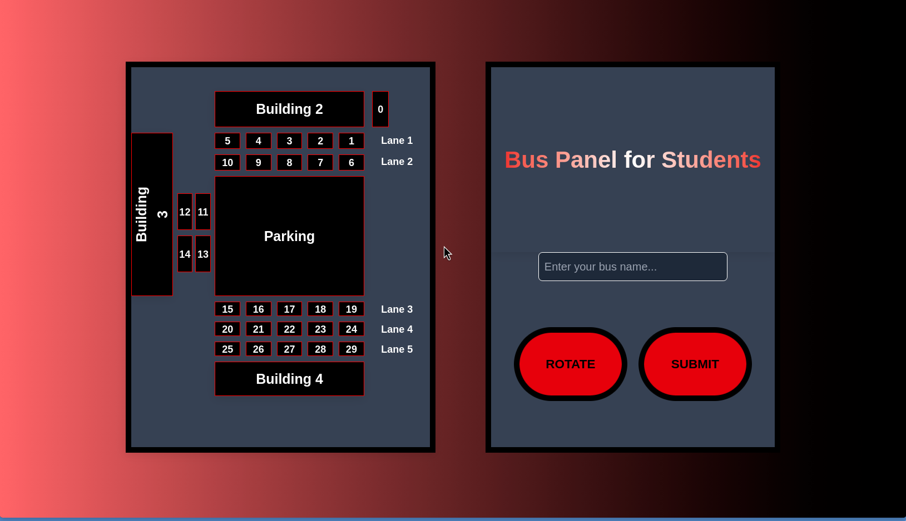
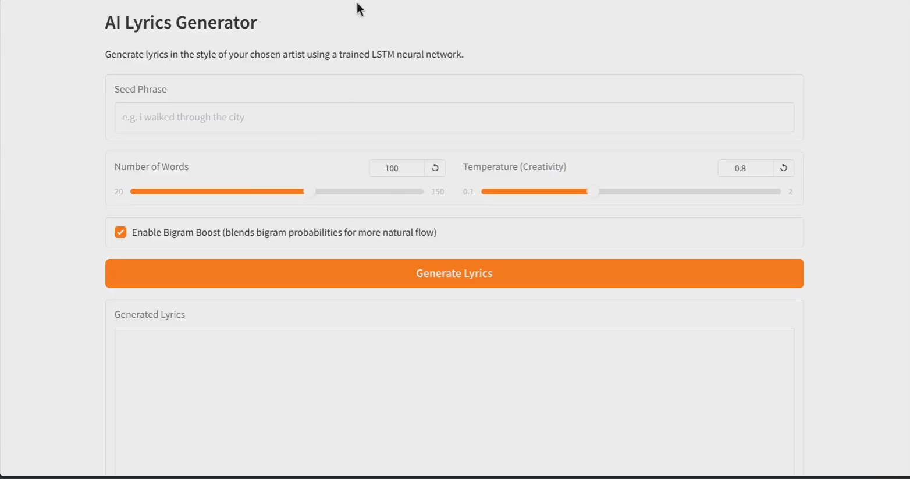
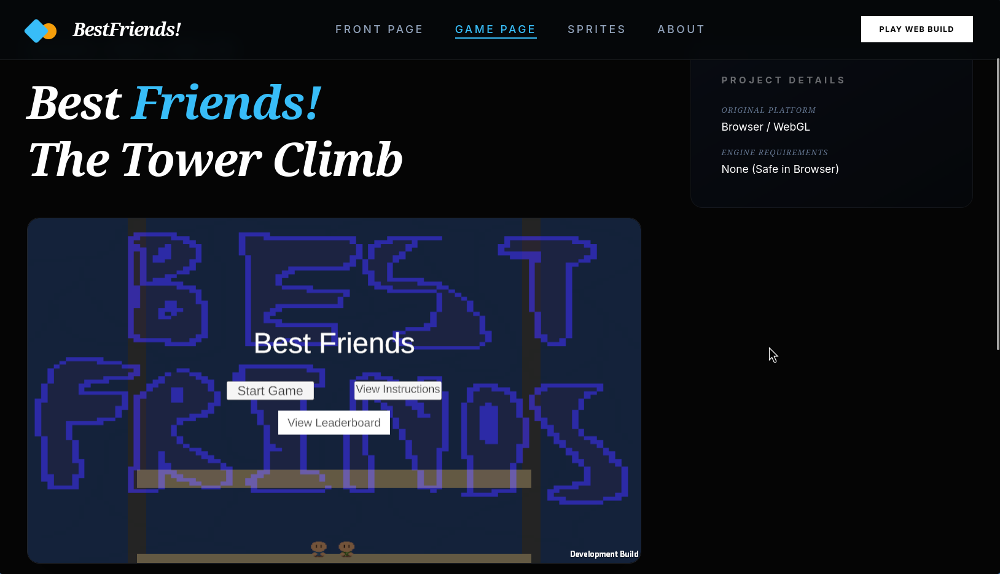
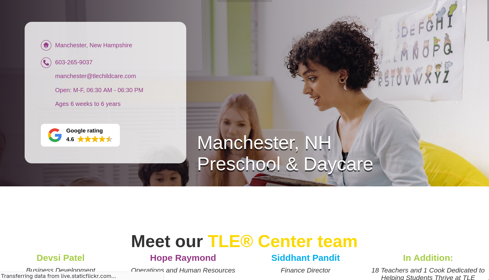

Andrew Sinha
Web, Software, and Command Line Development Solutions.
I am a high school student focused on web development, command-line programming, and the cross-section between education and computer science. My experience is centered on competitions, CTFs, and in-school projects. As a part of the Computer Science academy, I have created many such projects from command-line to GUI to web development.
Professionally, I am looking for an experience that merges education and computer science. However, I am also open to web development, specifically towards react or base HTML/CSS/JS. I also am open to work in robotics due to my experience in FIRST Robotics Competition programming for three years.
Project Showcase
A look at a few of my most significant projects that I've made in my Computer Science experience.
01. Congressional App Challenge Submission — MCST Bus Tracking App
Next.js, React, TypeScript, Supabase, Tailwind CSS, Authentication & Session Management.

export async function GET(request: NextRequest) {
const { searchParams } = new URL(request.url);
const bus = searchParams.get('bus');
const { data, error } = await supabase
.from('buses')
.select('id')
.eq('bus_name', bus)
.single();
if (error) {
return NextResponse.json(
{ bus, message: 'Bus has not arrived yet' },
{ status: 404 }
);
}
return NextResponse.json({
bus,
number: data.id
});
}02. AI Lyrics Generator
Python, PyTorch, LSTM Neural Networks, Natural Language Processing (NLP), Gradio,Git/GitHub.

with torch.no_grad():
logits, hidden = model(x, hidden)
scaled_logits = logits[0, -1, :] / temperature
probabilities = F.softmax(scaled_logits, dim=0)
next_idx = torch.multinomial(
probabilities,
1
).item()
next_word = idx2word.get(
next_idx,
"<UNK>"
)03. Best Friends! Game Website
React, TypeScript, Vite, Tailwind CSS, React Router, Unity WebGL Integration, Framer Motion, Responsive Web Design.

const { unityProvider, isLoaded, loadingProgression }
= useUnityContext({
loaderUrl: '/unity-game/Build/WebGLBuild.loader.js',
dataUrl: '/unity-game/Build/WebGLBuild.data',
frameworkUrl: '/unity-game/Build/WebGLBuild.framework.js',
codeUrl: '/unity-game/Build/WebGLBuild.wasm',
});
<Unity
unityProvider={unityProvider}
style={{
width: '100%',
aspectRatio: '16/9'
}}
/>04. Daycare Website Redesign
HTML5, CSS3, JavaScript, Responsive Web Design, UI/UX Design, Content Management, Accessibility Principles.

<div class="team__item">
<a href="#my-popup-team-1">
<h3 class="team__item_title">
Devsi Patel
</h3>
<p class="team__item_position">
Business Development
</p>
<img
src="DevsiPatel.png"
alt="Devsi Patel"
/>
</a>
</div>Customized website based on The Learning Experience platform.
Resume
Review my extracurriculars, work experience, and computer science projects among other achievements.
Reach Out To Me
Below is my email if you would like to reach out to me for any reason. Otherwise, feel free to check out my GitHub (linked/listed below) to look at my other projects!
- Email ajsinha2027@gmail.com
- GitHub github.com/andsin09